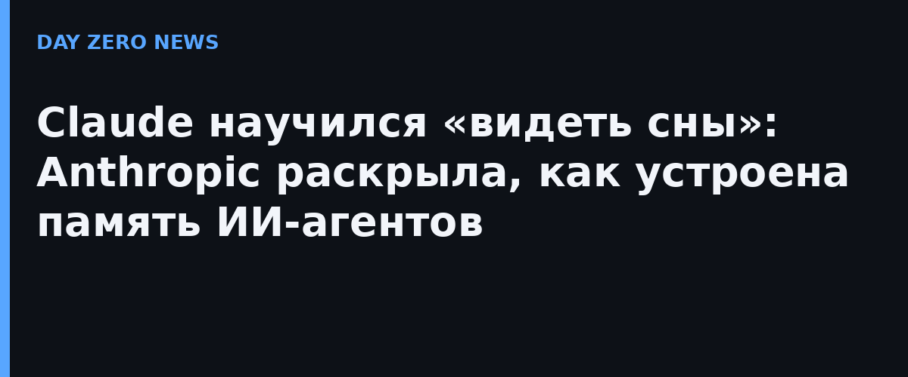

Anthropic опубликовала исследовательский пост «The components of agent memory» — системное объяснение того, как агенты на базе Claude запоминают работу между сессиями. Память здесь — не только заметки, написанные прямо во время диалога, но и «мечтание» (dreaming): офлайн-осмысление архива, когда агент без дела. Идея выросла из «вычислений во сне» (sleep-time compute, работы Letta и Калифорнийского университета в Беркли); превью режима dreaming показывали ещё в мае в Managed Agents API — теперь лаборатория выложила архитектуру памяти и серию экспериментов с точными цифрами.
В эксперименте с Pokémon Red модель Claude Sonnet 3.7 записала 413 файлов памяти в 225 папках (около 978 тысяч знаков) и заработала в игре лишь один значок. Claude Fable 5 обошёлся девятью файлами в двух папках плюс один глобальный файл global.md — и добавила: четыре значка. Вывод авторов: умение оценивать значимость информации важнее объёма записей, а жёсткие предписания вроде «записывать только неудачи» у сильных моделей лишь снижали результат.
Одна ошибка в заметке о расположении покецентра упорно выводила агента не туда из горы Луны. Во время «мечтания» Claude сверил заметку с расшифровкой прошлой сессии, поймал ошибку и переписал её — и на 1935-м действии добрался до Селадона. Версия с неверной, но не исправленной памятью раз за разом возвращалась назад, а агент вовсе без памяти до цели не дошёл ни разу.
На архиве из примерно 350 тысяч файлов (около 420 млн токенов) компании Stainless, которую Anthropic купила в мае, агенты строили вики из связанных страниц. За 128 «сновящих» сессий доля выполненных критериев в ответах на 25 вопросов выросла с 13% до 48%. Со связкой «вики плюс поиск» оценка поднялась с 54% до 61% против 53% у одного поиска, а экономия составила около 20 тысяч токенов на вопрос.
Когда несколько агентов писали в общую таблицу, они перезаписывали друг друга: из 57 фактов контракта в итоговую вики дожило 41 — потеря 28%. Индивидуальные страницы по каждому контракту дали 57 из 57. Сама Anthropic предупреждает: встраиваемые в сессию заметки съедают токены, неверная запись кочует во все будущие диалоги, а «мечтание» может подтолкнуть агента к галлюцинациям. Часть разработчиков, по словам авторов, предпочитает простую память в markdown, которую можно читать и сравнивать вручную.